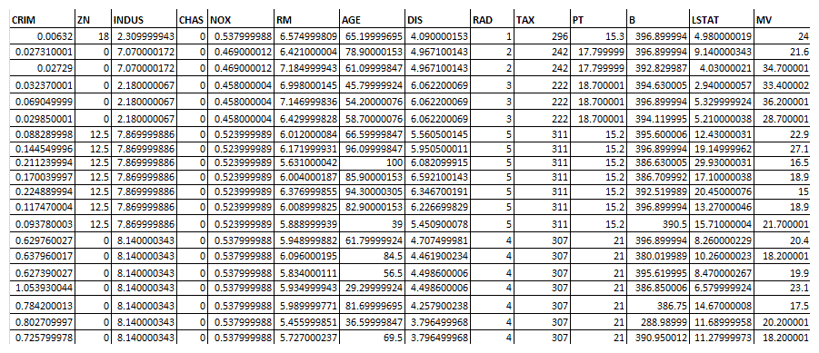
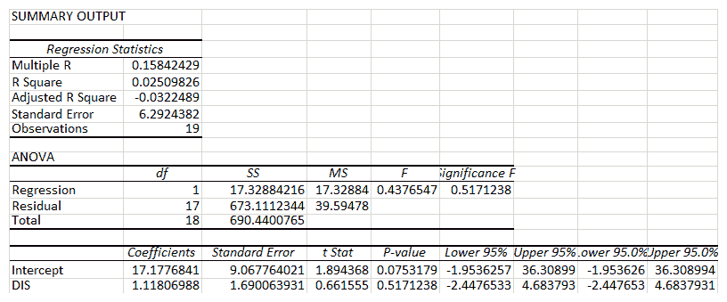
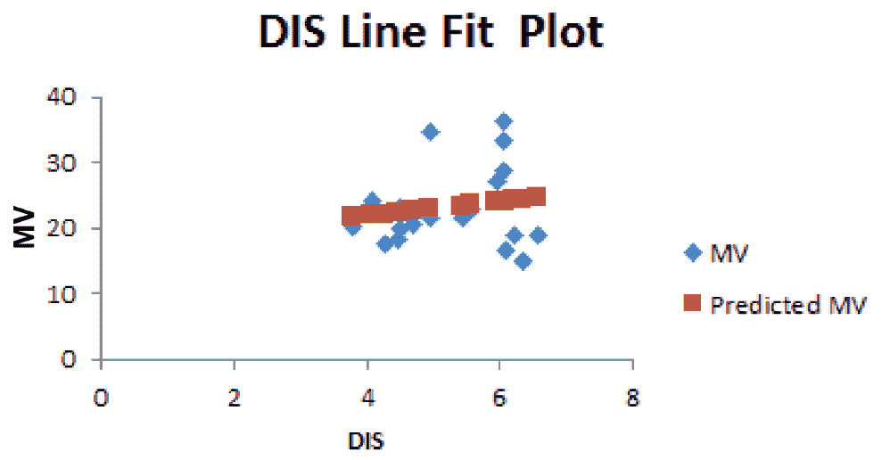
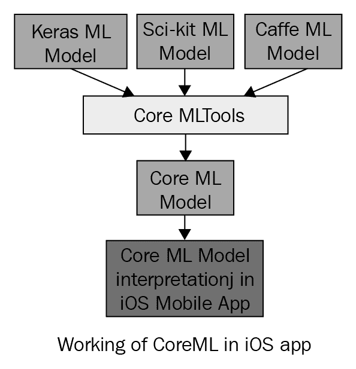
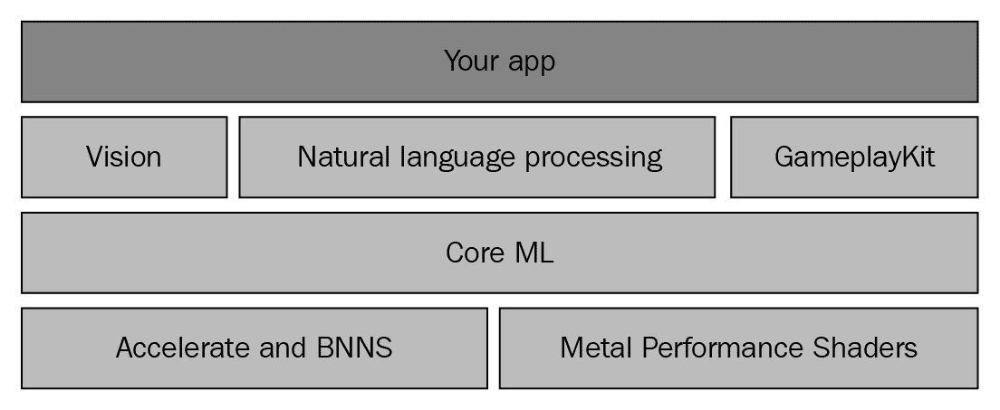
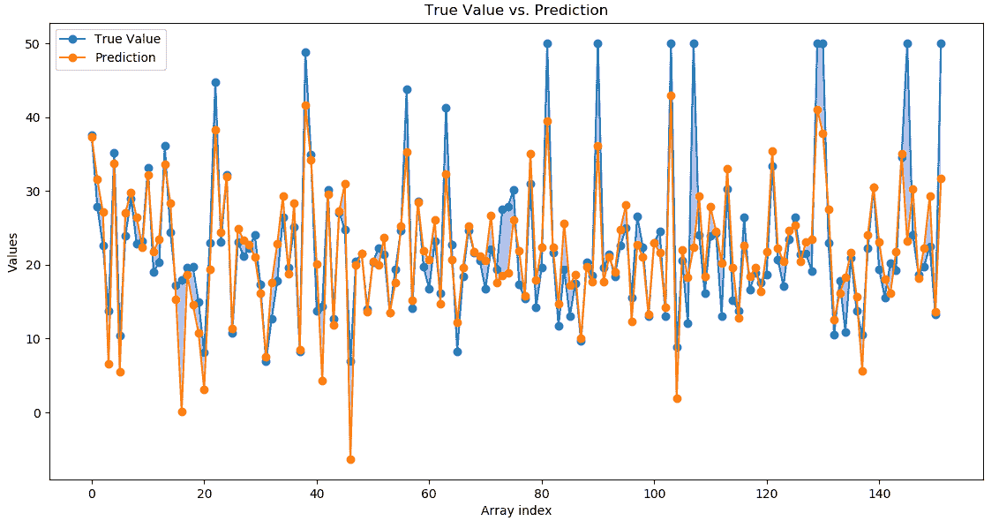
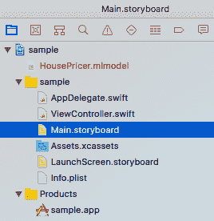

本章将为您提供回归算法的概述和对Core ML基础知识的深入了解，并将向您介绍如何创建一个利用回归算法的机器学习程序，以及如何使用iOS中的Core ML来预测给定的一组住房相关数据的房价。
正如我们在第一章、移动机器学习简介中已经看到的，任何机器学习程序都有四个阶段。我们将看到我们将在四个阶段中涵盖什么，以及我们将使用什么工具来解决底层的机器学习问题。
问题定义:提供了某个区域的房屋信息，我们想预测该区域一套房屋的中值。
我们将在本章中讨论以下主题:
回归分析是数据统计分析中的一种基本方法。这是一种统计方法，有助于发现变量之间的关系。它主要用于理解输入和输出数值变量之间的关系。我们应该首先确定因变量，它会根据自变量的值而变化。例如，房子的价值(因变量)根据房子的平方英尺(自变量)而变化。回归分析对预测非常有用。
在一个简单的回归问题中(单个 x 和单个 y ，模型的形式如下:
在更高的维度中，当我们有多个输入( x )时，这条线被称为平面或超平面。
在我们的示例中，我们根据可能影响特定区域数据价格的各种参数来预测房屋价格。
以下是解决回归问题时要考虑的一些要点:
能够学习回归预测模型的算法被称为回归算法。
在本节中，我们将通过一个具体数据集的详细示例来理解线性回归。我们也将使用相同的数据集来解决iOS Core ML示例。
我们将使用波士顿数据集来解决回归问题。该数据集包含由美国人口普查局收集的关于马萨诸塞州波士顿地区住房的信息。它是从StatLib档案(【http://lib.stat.cmu.edu/datasets/boston】T4)中获得的，并在整个文献中被广泛用于基准算法。数据集很小，只有506个案例。
这个数据集的名字就叫做波士顿。它有两个拍照任务:现在，其中一氧化氮水平将被预测；和价格，其中房屋的中值被预测。
关于数据集的其他详细信息如下:
我们将尝试使用Excel对数据集进行简单的线性回归和多元回归，并了解细节。出于分析目的，我们将仅考虑来自波士顿数据集的506样本数据空间中的以下20个数据元素:

现在，我们可以使用Excel中给出的数据分析选项，尝试仅考虑因变量DIS来预测MV。在数据分析中，选择Regression，选择MV作为Y值，选择DIS作为X值。这是一个简单的回归，用一个因变量来预测产量。以下是Excel生成的输出:

以DIS为因变量预测MV的线性回归方程为Y = 1.11 x+17.17(DIS的DIS系数+截距值):
R2 =0.0250
现在，我们可以看到MV对考虑用于分析的20个数据样本的预测输出:
因变量DIS预测的MV输出图如下:

现在，我们了解了线性回归对单个因变量的作用。同样，我们可以有任意数量的因变量，通过将它们包括为 X1 、 X2 、 X3 、... XN
在我们的数据集中，我们总共有14个变量，我们可以让MV依赖于所有剩余的13个变量，并以与之前为单个变量指定的相同方式创建回归方程。
现在我们已经了解了如何使用Excel对波士顿数据集执行回归，我们将使用Core ML执行同样的操作。在继续进行并在Core ML中实现之前，我们必须了解什么是Core ML，并研究Core ML的基础知识。
Core ML支持iOS移动应用在移动设备上本地运行机器学习模型。它使开发人员能够将各种各样的机器学习模型集成到移动应用程序中。开发人员使用Core ML编写机器学习移动应用程序不需要广泛的机器学习或深度学习知识。他们只需要知道如何像其他资源一样将ML模型包含到移动应用程序中，并在移动应用程序中调用它。数据科学家或机器学习专家可以用他们熟悉的任何技术创建ML模型，比如Keras、scikit-learn等等。Core ML提供了一些工具，可以将使用其他工具(tensor、scikit-learn等)创建的ML数据模型转换成Core ML规定的格式。
这种向核心ML模型的转换发生在应用程序开发阶段。当应用程序正在使用时，它不会实时发生。转换是通过使用coremltools Python库完成的。当应用程序反序列化一个核心ML模型时，它就变成了一个具有prediction方法的对象。核心ML并不是真的用于训练，只是用于运行预训练的模型。
Core ML支持广泛的深度学习能力，支持超过30层。深度学习中的层实际上暗示了数据转换的层数。它还支持标准模型:树集成、支持向量机和线性模型。它建立在金属等底层技术之上。Core ML无缝地利用CPU和GPU来提供最大的性能和效率。它能够根据手头任务的强度在CPU和GPU之间切换。由于Core ML允许机器学习在设备上本地运行，数据不需要离开设备进行分析。
借助Core ML，我们可以将经过训练的机器学习模型集成到我们的应用中:

经过训练的模型是将机器学习算法应用于一组训练数据的结果。该模型根据新的输入数据进行预测。例如，在给定卧室和浴室数量的情况下，在一个地区的历史房价中训练的模型可能能够预测房子的价格。
Core ML针对片上性能进行了优化，最大限度地减少了内存占用和功耗。严格在设备上运行可确保用户数据的隐私，并保证我们的应用程序在网络连接不可用时仍能正常工作和响应。
核心ML是特定领域框架和功能的基础。Core ML支持视觉进行图像分析，自然语言处理的基础，以及 G ameplaykit 评估学习过的决策树。 Core ML 本身构建于底层原语之上，如 Accelerate 和 BNNS ，以及金属性能着色器:

打算使用Core ML编写ML程序的iOS开发人员需要了解以下基本步骤:
Core ML最大的优势就是使用起来极其简单。仅仅几行代码就可以帮助集成一个完整的ML模型。Core ML只能帮助将预训练的 ML模型集成到应用中。没有模特培训是不可能的。
本节将详细介绍如何创建回归模型，然后在iOS移动应用程序中使用回归模型。它将详细介绍创建iOS回归ML应用程序以解决所定义问题的各个步骤。
开发人员计算机上需要安装以下软件:
本章的练习程序可以从我们的GitHub资源库下载，网址是https://GitHub . com/packt publishing/Machine-Learning-for-Mobile/tree/master/housing % 20 price % 20 prediction。
在下面的程序中，我们将使用pandas、numpy和scikit-learn来创建模型。因此，从命令提示符/终端使用以下命令从pip包管理器安装这些包:
pip install scikit-learn
pip install numpy
pip install pandas
为了将创建的模型转换成Core ML格式，我们需要使用Apple提供的Core ML scikit-learn Python转换器:
pip install -U coremltools
本节将解释我们如何使用scikit-learn创建线性回归模型文件，并将其转换成与Core ML兼容的.mlmodel文件。我们将使用波士顿数据集来创建模型。下面是一个简单的Python程序，它使用波士顿数据集使用scikit-learn创建了一个简单的线性回归模型。然后核心ML工具将它转换成与核心ML兼容的模型文件。让我们详细地看一下这个程序。
首先，我们需要导入程序所需的包:
# importing required packages
import numpy as np
前面几行导入NumPy包。NumPy是使用Python进行科学计算的基础包。它包含了一个强大的N维数组对象。这个numpy数组将在这个程序中用于存储数据集，它有14个维度:
import pandas as pd
from pandas.core import series
前面的代码行导入了pandas包，这是一个开源的、BSD许可的库，为Python编程语言提供了高性能、易于使用的数据结构和数据分析工具。使用熊猫，我们可以创建一个数据框。您可以假设一个pandas数据框是一个Excel电子表格，其中每个工作表都有标题和数据:
import coremltools
from coremltools.converters.sklearn import _linear_regression
前面几行导入了我们在这个程序中使用的线性回归模型的核心ML Tools转换包。Core ML Tools是一个Python包，用于创建、检查和测试.mlmodel格式的模型。特别是，它可用于执行以下操作:
from sklearn import datasets, linear_model
from sklearn.metrics import mean_squared_error, r2_score
前面几行导入了sklearn包。数据集用于导入sklearn包中的内置数据集。在本程序中，我们将使用上一节中介绍的波士顿房价数据集。linear_model包用于访问线性回归函数，度量包用于计算我们模型的测试度量，例如均方误差:
boston = datasets.load_boston()
前面一行从sklearn数据集包中加载波士顿数据集:
bos = pd.DataFrame(boston.data)
现在，我们需要从整个数据集中提取数据:
bos.columns = boston.feature_names
获取列名，即该数据的标题:
bos['price'] = boston.target
现在，让我们定义我们想要预测的目标列。定义为目标的列将是要预测的列:
x = bos.drop('price', axis=1)
一旦我们定义了目标列，我们将从目标列中删除数据，这样它就变成了x:
y = bos.price
由于我们将价格定义为目标列，y是数据集数据中的价格列:
X_train,X_test,Y_train,Y_test = sklearn.model_selection.train_test_split(x,y,test_size=0.3,random_state=5)
然后，我们按照70/30规则将数据分为训练数据和测试数据:
lm = sklearn.linear_model.LinearRegression()
一旦我们有了训练和测试数据，我们就可以启动一个线性回归对象:
lm.fit(X_train, Y_train)
使用已经初始化的线性回归对象，我们只需将训练和测试数据输入回归模型:
Y_pred = lm.predict(X_test)
前面一行预测了目标:
mse = sklearn.metrics.mean_squared_error(Y_test, Y_pred)
print(mse);
前面几行将计算拟合模型和预测结果的均方误差。
因为回归预测模型预测一个数量，模型的技巧必须在那些预测中被报告为一个错误。
评估回归预测模型技巧的方法有很多，但最常见的是计算均方根误差 ( RMSE )。
例如，如果一个回归预测模型做出了两个预测，其中一个预测为 1.5 ，预期值为 1.0 ，另一个预测为3.3，预期值为 3.0 ，则 RMSE 将如下所示:
| 一 | RMSE = sqrt(average(error^2)】 |
| 2 | RMSE = sqrt((1.0-1.5)^2+(3.0-3.3)^2)/2) |
| 3 | RMSE = sqrt((0.25+0.09)/2) |
| 四 | RMSE = sqrt(0.17) |
| 5 | RMSE = 0.412 |
RMSE 的一个好处是误差分数的单位与预测值的单位相同:
model = coremltools.converters.sklearn.convert(
sk_obj=lm,input_features=boston.feature_names,
output_feature_names='price')
在前一行中，我们将拟合模型转换为核心ML格式。基本上，这是创建.mlmodel文件的那一行。我们还指定了输入和输出列名:
model.save('HousePricer.mlmodel')
在前一行中，我们将模型保存到磁盘上。这可以在我们的iOS程序中使用。
当由scikit-learn创建的模型在转换成核心ML格式之前被独立执行和测试时，发现了以下方差和均方误差:
下图给出了预测值与实际值的对比:

下面是Xcode项目的项目结构，其中.mlmodel文件被导入并用于预测:

ViewCcontroller.swift文件是使用创建的模型文件的地方，住房预测在移动应用程序中执行。
housePricer.mlmodel文件是使用scikit-learn创建的模型文件，并使用核心ML转换器工具转换成ML模型文件。这个文件包含在iOS Xcode项目的resources文件夹中。
本节提供了使用.mlmodel格式的模型并进行房价预测的Swift代码的详细信息:
// ViewController.swift
import UIKit
import CoreML
class ViewController: UIViewController {
let model = HousePricer()
这一行用于初始化我们已经导入到项目中的模型类。以下几行定义了文本字段的出口/变量，以便与之交互:
@IBOutlet weak var crim: UITextField!
@IBOutlet weak var zn: UITextField!
@IBOutlet weak var price: UILabel!
@IBOutlet weak var b: UITextField!
@IBOutlet weak var ptratio: UITextField!
@IBOutlet weak var medv: UITextField!
@IBOutlet weak var lstat: UITextField!
@IBOutlet weak var rad: UITextField!
@IBOutlet weak var tax: UITextField!
@IBOutlet weak var dis: UITextField!
@IBOutlet weak var age: UITextField!
@IBOutlet weak var rm: UITextField!
@IBOutlet weak var nox: UITextField!
@IBOutlet weak var chas: UITextField!
@IBOutlet weak var indus: UITextField!
override func didReceiveMemoryWarning() {
super.didReceiveMemoryWarning()
// Dispose of any resources that can be recreated.
}
override func viewDidLoad() {
super.viewDidLoad();
updated(rad);
}
@IBAction func updated(_ sender: Any) {
guard let modeloutput = try? model.prediction(CRIM: Double(crim.text!)!, ZN: Double(zn.text!)!, INDUS: Double(indus.text!)!, CHAS: Double(chas.text!)!, NOX: Double(nox.text!)!, RM: Double(rm.text!)!, AGE: Double(age.text!)!, DIS: Double(dis.text!)!, RAD: Double(rad.text!)!, TAX: Double(tax.text!)!, PTRATIO: Double(ptratio.text!)!, B: Double(b.text!)!, LSTAT: Double(lstat.text!)!) else {
fatalError("unexpected runtime error")
}
price.text = "$" + String(format: "%.2f",modeloutput.price);
}
}
前面的函数作为onchange监听器添加到所有前面的文本字段。在这里，我们使用我们之前创建的模型对象，并预测文本字段中给定值的价格。
创建的Xcode项目在模拟器中执行，以下是我们获得的示例:
我们可以通过访问Core ML的官方网站https://developer.apple.com/documentation/coreml，更深入地了解其提供的服务。
在本章中，我们讨论了以下主题: